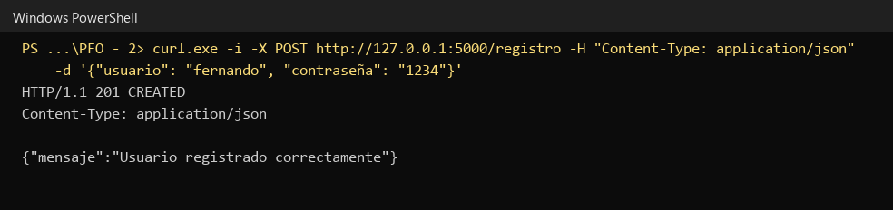
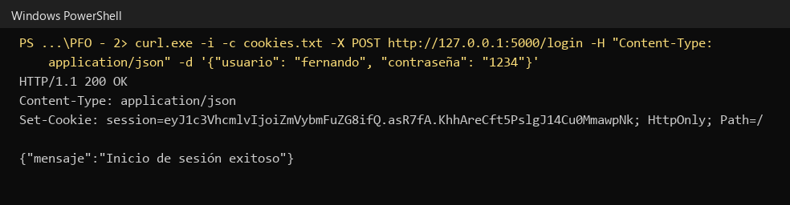
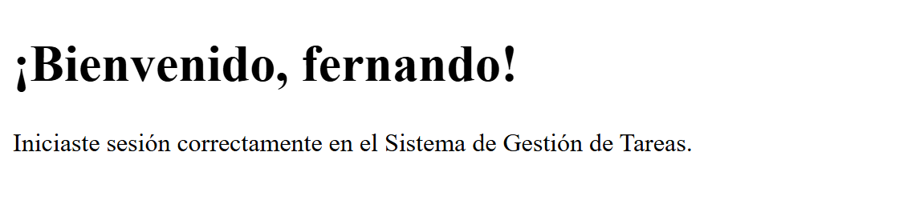
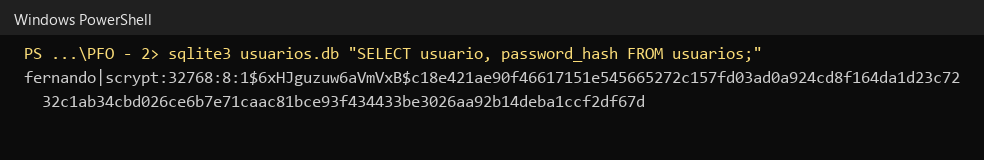
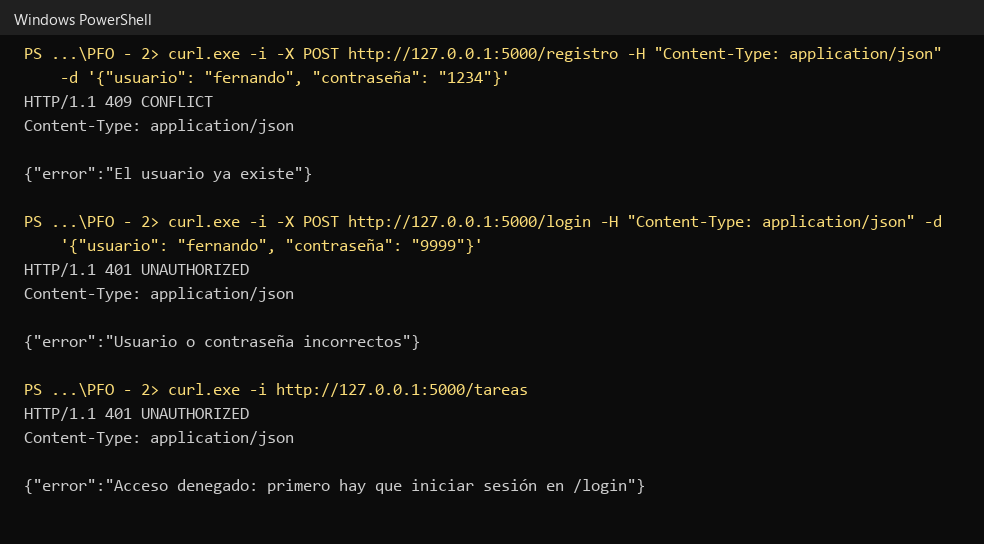
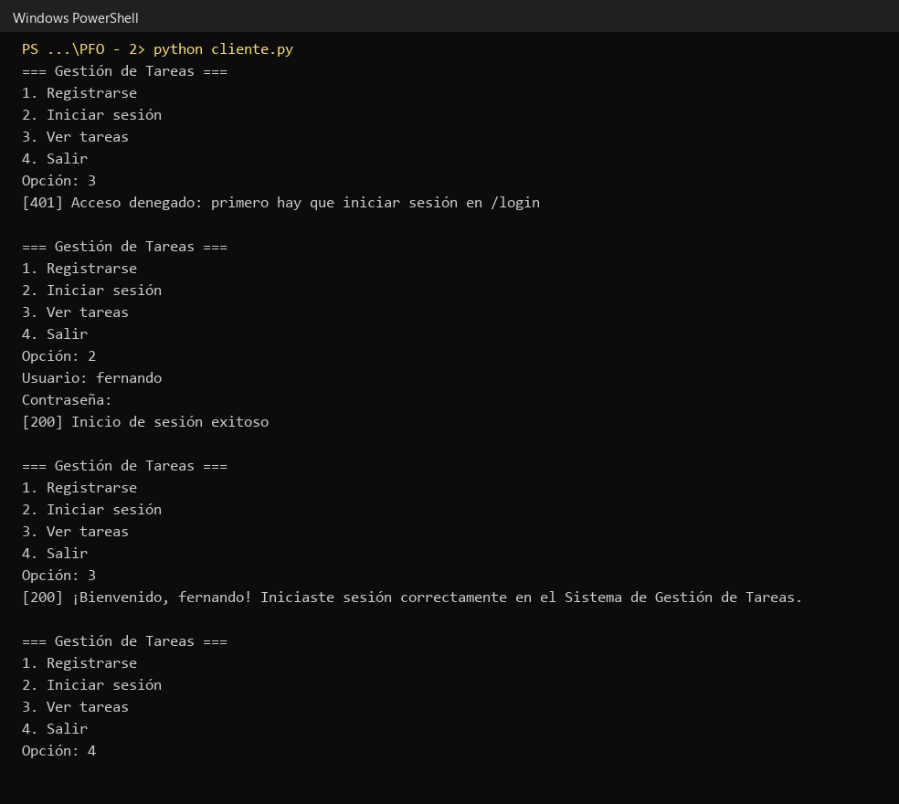
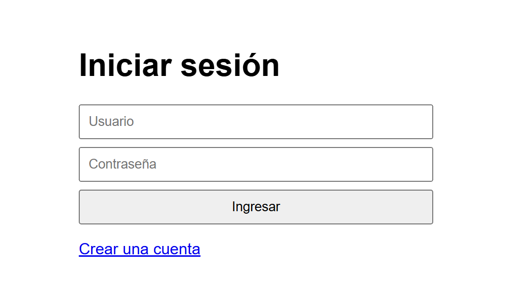
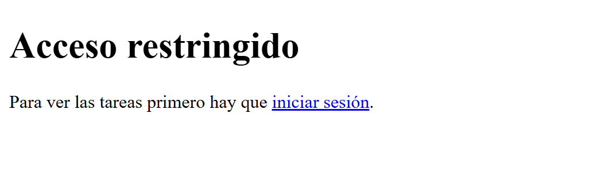

Programación sobre Redes, Tecnicatura Superior en Desarrollo de Software (IFTS N° 29)
API REST desarrollada con Flask que permite registrar usuarios, iniciar sesión y acceder a una página de bienvenida protegida. Los usuarios se guardan en SQLite con la contraseña hasheada. Incluye un cliente de consola que consume la API.
| Método | Ruta | Descripción |
|---|---|---|
| POST | /registro | Crea un usuario con {"usuario": "...", "contraseña": "..."} y guarda el hash en SQLite. |
| POST | /login | Verifica las credenciales e inicia la sesión. |
| GET | /tareas | Muestra el HTML de bienvenida. Requiere sesión iniciada. |
| GET | /login y /registro | Formularios HTML para usar la API desde el navegador. |
pip install -r requirements.txt python servidor.py python cliente.py # en otra terminal
Se ejecutaron 67 casos automatizados contra el servidor en funcionamiento (funcionalidad de la API, validación de entradas, caracteres especiales, seguridad, formularios y navegador, concurrencia, persistencia, errores de infraestructura y cliente de consola) y un recorrido manual completo en un navegador. Todos dieron el resultado esperado. El detalle está en el README del repositorio.



/tareas con la sesión iniciada.

/tareas sin sesión (401).


/tareas sin sesión desde un navegador.Porque la base de datos puede filtrarse. Con contraseñas en texto plano, quien la obtenga tiene de inmediato las credenciales de todos los usuarios y, como muchas personas repiten la contraseña en varios servicios, también acceso a esas otras cuentas. Un hash es una función de un solo sentido: el servidor calcula el hash de lo que escribe el usuario y lo compara con el guardado, sin conocer ni almacenar la contraseña original. Las librerías actuales agregan una sal aleatoria por contraseña y usan algoritmos lentos a propósito (scrypt, bcrypt, PBKDF2), lo que inutiliza las tablas precalculadas y encarece la fuerza bruta.
sqlite3 viene incluido en Python.UNIQUE sobre el usuario y consultas parametrizadas.